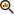

Tip: View our Insights Product Launch Video and/or the 'Insights for Investigations' video on the Insider Channel.
Extract relevant information (entities), such as real world objects (persons, locations, organizations, products, etc.), emotions, sentiments and references between them.
|
|
Tip: View our Insights Product Launch Video and/or the 'Insights for Investigations' video on the Insider Channel. |
View extracted entities in Document View.
Extracted entities are also shown and can be selected in Facets view (the  icon identifies the facet as an extracted entity).
Click on a section in the facet to drill down.
When searching for extracted entities via the Fields option, for performance reasons, only the first 10 values will be shown in an extracted entity field. So, for extracted email addresses, only the first 10 extracted email addresses will be shown. If you want to view all extracted email addresses, you need to download or export the result list. Each extracted entity field can be searched like any normal field. All extracted values from the library are automatically added to choose from.
|
|
Note: If you do not have access to the Insights functionality yet, please contact ZyLAB. |
Insights can be found on the Home page:

Library
First, make sure entity rules are added to the library.
Jobs
Then, schedule a job to extract the defined entities of an entity rule.
Entity Management
View the list of Entity Types. Manage entity types by enabling/disabling entities.
Consumption Overview
View the Insights usage statistics.